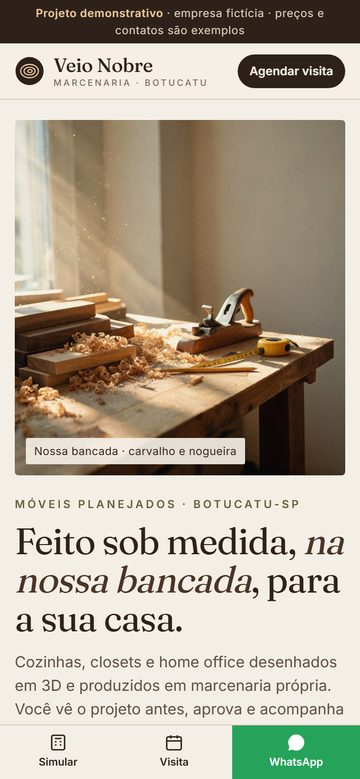

Oficina mecânica
Auto Center Serra Azul
- Acompanhamento pela placa, com fotos e aprovação do orçamento
- Agendamento com dia e horário livres
- Orçamento rápido no WhatsApp
- Lembrete de revisão por km

Marcenaria e planejados
Marcenaria Veio Nobre
- Portfólio filtrado por ambiente
- Simulador: móvel, medidas e acabamento viram faixa de preço
- Agendamento da visita técnica
- Amostras de acabamento e perguntas frequentes
O que vem junto
- Domínio .com.br e hospedagem configurados no nome da empresa
- SEO local para Botucatu: títulos, descrição e dados estruturados LocalBusiness
- Perfil da empresa no Google ajustado e ligado ao site
- Treinamento para atualizar preços, fotos e status dos serviços
- Manutenção mensal opcional: ajustes, backups e respostas às avaliações